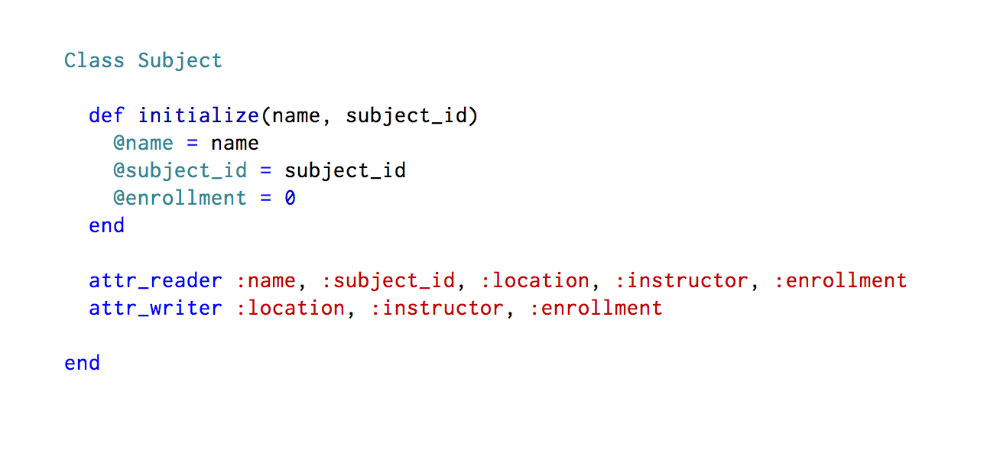

Ruby Classes
May 06, 2015.
Object Oriented programming(OOP) is a very important programming paradigm. This type of programming involves grouping things with similar behavior together into what is know as a "Class". There are several programming languages which have OOP capabilities. Some of them are Java, Python, C++, and Ruby. In this post I will talk a bit about OOP using Ruby Language.
OOP is very useful because it can be used to model a lot of real world scenarios. Say for instance, you are a school administrator and you wanted to keep track of different subjects being offered at your school. The knowlege of OOP can help you do this. We can do this by creating a "Class" and then defining all the behavior we want our subjects to have. Below is a sample Ruby definition of the Class.

In Ruby, you define a class by starting with the key word "Class" followed by the desired class name, then define all instances variables and methods, and end with the "end" keyword. In Ruby when you define a class, you can define a special method called "initialize". This method is used to set initial values for an object of the class. In order to create an object, we use a process known as "instantiation". For instance(no pun intended), we could do:
math1 = Subject.new("Mathematics", 3145)
This creates a new instance of the class "Subject", and "math1" is just a reference to the object. It also sets the name of the object to "Mathematics", and the subject_id to 3145. After this, math1 is now endowed with all the properties defined in the subject class. We can create as many objects of the Subject class as we want.
Now let's talk about the attr_methods. In the class definition, we see two lines that say "attr_reader..." and "attr_writer...". If you're familiar with OOP from another programming language, you would have heard about "getters" and "setters". These are instance methods used to obtain and change information respectively, of instance variables. attr_methods is a very convenient way that Ruby lets us create getters and setters. attr_reader is the getter, while attr_writer is the setter. In some other programming languages, you have to write getters and setters for each instance variable. But with Ruby's syntactic sugar, you write attr_reader just once, and list all the instance variables you want to create getters for, and Ruby does all the hard work internally. With these, we can access and change object information as needed.